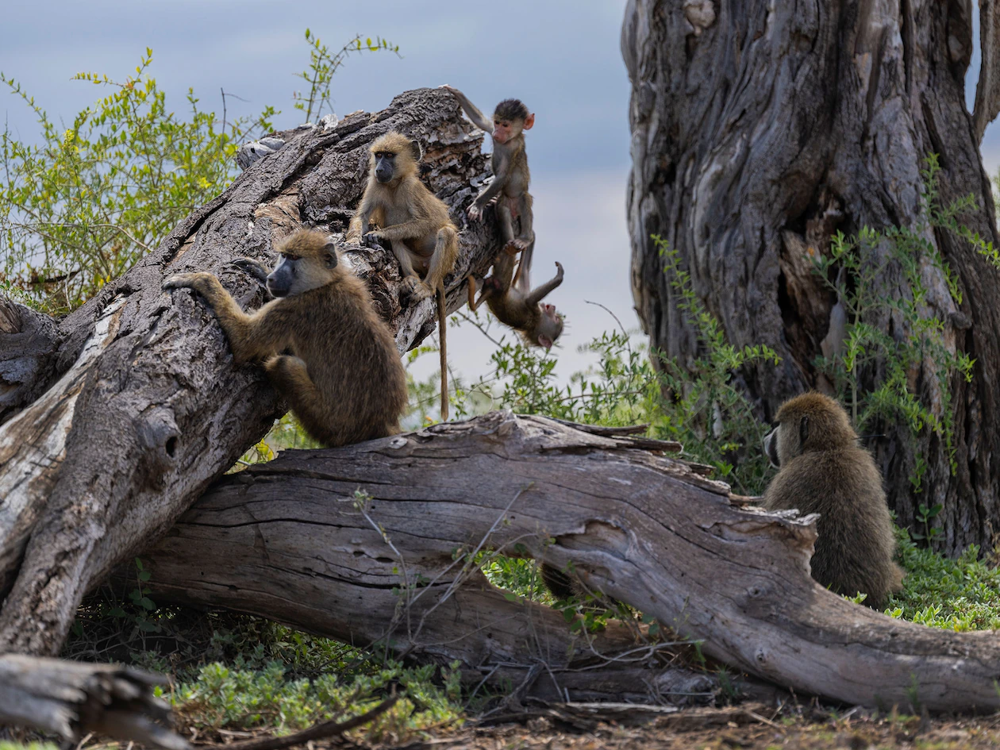

Artikel Terbaru
#Science
What wild baboons can teach us about aging
[Article by Michael Greshko] [Photographs by Nichole Sobecki]

For 50 years, researchers in Kenya have studied more than 1,500 baboons across eight generations. What they’ve learned could apply to our lives, too. Olduvai the baboon was minding his business in the savannas of Kenya’s Amboseli basin when he suddenly dropped to the ground, a small tranquilizing dart having found purchase beneath his fur. None of his fellow baboons noticed; the person quickly lowering the blow gun saw to that. A few hours later, Olduvai would be released—unaware of the contribution he had made to our understanding of aging. Read More >>
#Geo
5 wildly underrated natural escapes for 2023
[Article by Marco Bottigelli] [Images from Getty Images]
From one of the best whale-watching spots in the world to a legendary desert landscape, these destinations spark new appreciation for the planet’s under-the-radar treasures. Wondering where to go next? You’re not the only one. After a frenetic return to travel, many are asking how to enjoy the rush of discovery without the crush of crowds. Our annual list of 25 inspiring and less visited destinations for the year ahead encompasses places filled with wonder, rewarding to travelers of all ages, and supportive of local communities and ecosystems. Reported by our global editors and framed by five categories (Nature, Family, Adventure, Culture, and Community), these destinations are under the radar, ahead of the curve, and ready for you to start exploring. Read More >>
#Technology
Cipset Kompanio 520 dan Kompanio 528 Hadirkan Pengalaman Komputasi yang Cepat dan Andal
[Article by Aldrin Symu] [Gambar Istimewa]
Media Tek melansir cipset Kompanio baru untuk Chromebook; yaitu Kompanio 520 dan Kompanio 528. Dengan kinerja komputasi dan masa pakai baterai yang telah ditingkatkan untuk Chromebook entry level, cipset Kompanio terbaru ini menghadirkan pengalaman yang mulus sehingga konsumen dapat menjelajah, bermain cloud game, streaming, dan menggunakan aplikasi Google Play sambil menikmati masa pakai baterai yang awet sepanjang hari. Read More >>